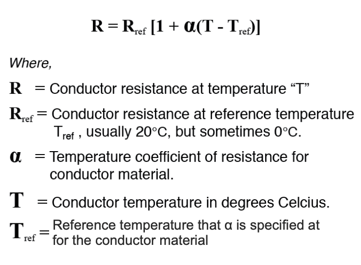
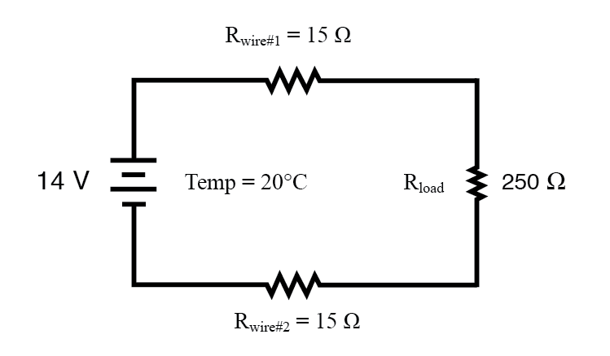
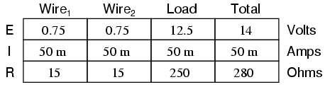
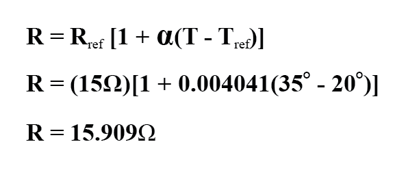
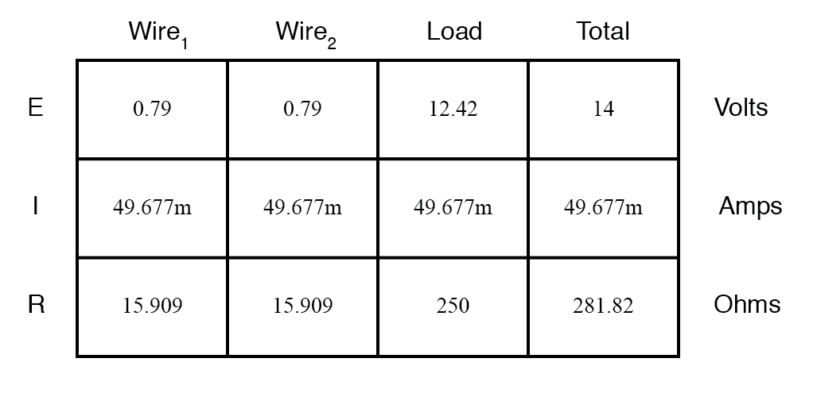

12. Physics Of Conductors And Insulators
Temperature Coefficient of Resistance
You might have noticed on the table for specific resistances that all figures were specified at a temperature of 20° Celsius. If you suspected that this meant specific resistance of a material may change with temperature, you were right!
Resistance values for conductors at any temperature other than the standard temperature (usually specified at 20 Celsius) on the specific resistance table must be determined through yet another formula:

The “alpha” (α) constant is known as the temperature coefficient of resistance and symbolizes the resistance change factor per degree of temperature change. Just as all materials have a certain specific resistance (at 20° C), they also change resistance according to temperature by certain amounts. For pure metals, this coefficient is a positive number, meaning that resistance increases with increasing temperature. For the elements carbon, silicon, and germanium, this coefficient is a negative number, meaning that resistance decreases with increasing temperature. For some metal alloys, the temperature coefficient of resistance is very close to zero, meaning that the resistance hardly changes at all with variations in temperature (a good property if you want to build a precision resistor out of metal wire!). The following table gives the temperature coefficients of resistance for several common metals, both pure and alloy:
Temperature Coefficients of Resistance at 20 Degrees Celsius
| Material | Element/Alloy | “alpha” per degree Celsius |
|---|---|---|
| Nickel | Element | 0.005866 |
| Iron | Element | 0.005671 |
| Molybdenum | Element | 0.004579 |
| Tungsten | Element | 0.004403 |
| Aluminum | Element | 0.004308 |
| Copper | Element | 0.004041 |
| Silver | Element | 0.003819 |
| Platinum | Element | 0.003729 |
| Gold | Element | 0.003715 |
| Zinc | Element | 0.003847 |
| Steel* | Alloy | 0.003 |
| Nichrome | Alloy | 0.00017 |
| Nichrome V | Alloy | 0.00013 |
| Manganin | Alloy | +/- 0.000015 |
| Constantan | Alloy | -0.000074 |
* = Steel alloy at 99.5 percent iron, 0.5 percent carbon tys
Let’s take a look at an example circuit to see how temperature can affect wire resistance, and consequently circuit performance:

This circuit has a total wire resistance (wire 1 + wire 2) of 30 Ω at standard temperature. Setting up a table of voltage, current, and resistance values we get:

At 20° Celsius, we get 12.5 volts across the load and a total of 1.5 volts (0.75 + 0.75) dropped across the wire resistance. If the temperature were to rise to 35° Celsius, we could easily determine the change of resistance for each piece of wire. Assuming the use of copper wire (α = 0.004041) we get:

Recalculating our circuit values, we see what changes this increase in temperature will bring:

As you can see, voltage across the load went down (from 12.5 volts to 12.42 volts) and voltage drop across the wires went up (from 0.75 volts to 0.79 volts) as a result of the temperature increasing. Though the changes may seem small, they can be significant for power lines stretching miles between power plants and substations, substations and loads. In fact, power utility companies often have to take line resistance changes resulting from seasonal temperature variations into account when calculating allowable system loading.
REVIEW:
- Most conductive materials change specific resistance with changes in temperature. This is why figures of specific resistance are always specified at a standard temperature (usually 20° or 25° Celsius).
- The resistance-change factor per degree Celsius of temperature change is called the temperature coefficient of resistance. This factor is represented by the Greek lower-case letter “alpha” (α).
- A positive coefficient for a material means that its resistance increases with an increase in temperature. Pure metals typically have positive temperature coefficients of resistance. Coefficients approaching zero can be obtained by alloying certain metals.
- A negative coefficient for a material means that its resistance decreases with an increase in temperature. Semiconductor materials (carbon, silicon, germanium) typically have negative temperature coefficients of resistance.
- The formula used to determine the resistance of a conductor at some temperature other than what is specified in a resistance table is as follows: